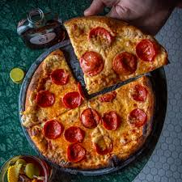
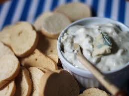
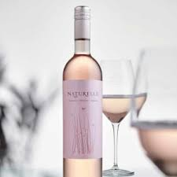
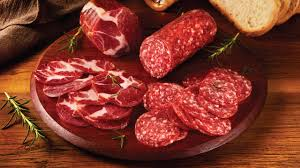
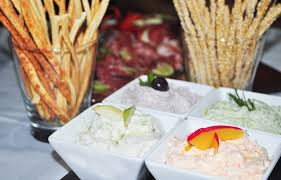
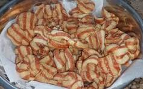

Noite de Queijos e Vinhos
-

Pizza de PepperoniUma deliciosa combinação de molho de tomate fresco, queijo mozzarella derretido e fatias generosas de pepperoni crocante. Perfeita para quem adora um sabor intenso e irresistível. Uma explosão de sabor em cada pedaço!
-

Torradas com Pasta de Queijo GorgonzolaDeliciosas fatias de pão crocante, cobertas com uma cremosa pasta de queijo gorgonzola, trazendo o equilíbrio perfeito entre o sabor marcante do gorgonzola e a suavidade da mistura cremosa. Uma combinação sofisticada e irresistível para quem aprecia um toque de sabor intenso e único. Ideal para acompanhar uma bebida fresca ou como um aperitivo delicioso
-

Vinho Rosé Casa Valduga NaturelleUm rosé elegante e refrescante, com aromas frutados de morango e framboesa, combinados com delicadas notas florais. De sabor suave e equilibrado, com uma acidez vibrante e um final agradável. Ideal para acompanhar pratos leves, como saladas, peixes e pratos com frutos do mar. Uma escolha perfeita para momentos de descontração e celebração!
-

SalameUma iguaria curada com perfeição, o salame apresenta uma combinação única de sabores intensos e levemente picantes. Seu sabor marcante e textura firme fazem dele o acompanhamento ideal para pães, queijos e pratos típicos. Perfeito para um aperitivo ou para dar um toque especial às suas receitas!
-

Grissini com Pasta de Queijo GorgonzolaDeliciosos e crocantes bastões de grissini acompanhados por uma irresistível pasta cremosa de queijo gorgonzola. A combinação perfeita entre o sabor intenso e delicado do queijo gorgonzola e a crocância dos grissinis, ideal para uma entrada sofisticada ou para saborear a qualquer hora. Uma experiência gastronômica cheia de sabor e textura!
-

Pele CrocanteA Pele listrada é um aperitivo crocante e salgado que se assemelha a pururuca, tem em sua composição: Farinha de trigo enriquecida com ferro e ácido fólico, féculade mandioca, sal, bicarbonato de sódio e corante artificial. Fritar em gordura quente e está pronto pra comer, simples gostoso e prático.
-
 Vinho Tinto Casal GarciaO Vinho Tinto Casal Garcia é uma escolha perfeita para quem aprecia um vinho de sabor elegante e equilibrado. Com aromas intensos de frutas vermelhas maduras, como cerejas e morangos, e um toque suave de especiarias, ele oferece uma experiência de sabor aveludada e rica. Ideal para acompanhar pratos de carnes vermelhas, massas com molhos robustos ou queijos curados, esse vinho é a companhia perfeita para momentos especiais. Um tinto leve e refrescante, que agrada todos os paladares.
Vinho Tinto Casal GarciaO Vinho Tinto Casal Garcia é uma escolha perfeita para quem aprecia um vinho de sabor elegante e equilibrado. Com aromas intensos de frutas vermelhas maduras, como cerejas e morangos, e um toque suave de especiarias, ele oferece uma experiência de sabor aveludada e rica. Ideal para acompanhar pratos de carnes vermelhas, massas com molhos robustos ou queijos curados, esse vinho é a companhia perfeita para momentos especiais. Um tinto leve e refrescante, que agrada todos os paladares. -
Água da CasaA "Água da Casa" é uma água potável filtrada, proveniente do sistema de abastecimento local, servida gratuitamente aos clientes. É uma opção refrescante e econômica para acompanhar sua refeição, garantindo hidratação de qualidade sem custo adicional.